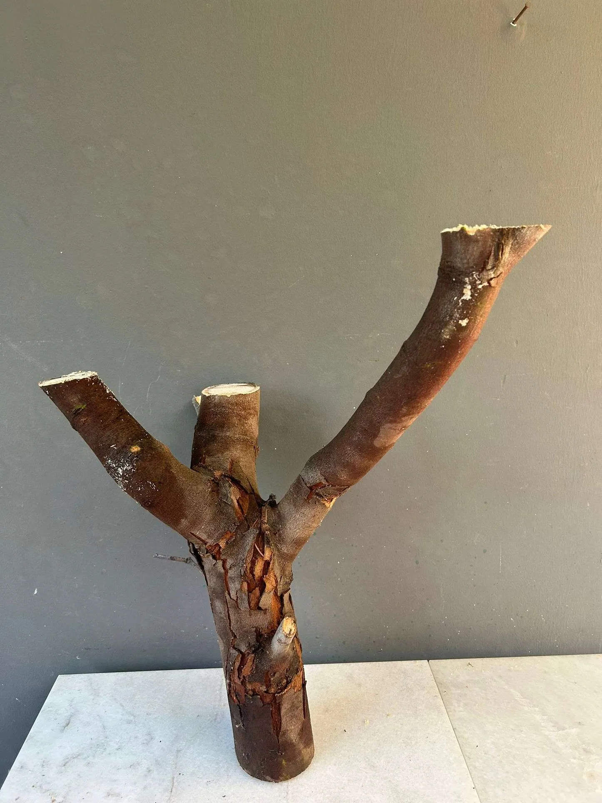

Description
Natural and minimalist looks are trending in home décor. And when it comes to combining both in one, what could be a better source of inspiration than nature? For me, trees are nature’s creativity at its best. Standing tall with branches freely making their way to the top, each branch of every tree has its own story. So, why not indulge in a DIY tree branch idea project and let nature decorate your home naturally?
The DIY plant stand I made from a fallen tree branch turned out to be a beautiful flower stand wood and perfect for creative indoor plant stand ideas. The wooden plant stand made from tree branches can decorate your indoor or outdoor garden, creating a place for your planters and decorating the space with its presence. What better way to DIY upcycle tree branches after pruning than using them again to decorate your home or garden?
Inspired by my DIY tree branches idea project, if you are looking for ideas on how to make a plant stand at home or how to make a wooden plant stand from tree branches, look no further. All you need to make a plant stand is a basic woodwork skill, a thick and strong branch of a tree, a saw, a drill or screwdriver, a pen/pencil, wood plank or wooden platforms, sanding paper, and protective gears like eyewear, gloves, and drop cloths. Once ready with the materials, let’s start the DIY upcycling tutorial on how to make a plant stand from a tree branch. Here we go!
Materials
A big branch
Saw
Pen/pencil
Drill/screwdriver
Screws
Wood plank / platforms
Protective eyewear and gloves
Drop cloths (or old towels / newspapers)
Sanding paper (optional)
Step 1: Select a branch for your DIY plant stand
Scout your garden or nearby park and pick a branch matching the size and style of the wooden plant stand you plan to make. Ensure that the branch you selected is solid and sturdy enough to bear the weight of the planters.
Bonus Tip: Unleash your imagination and be creative when selecting the branch. I have chosen a Y-shaped branch for a DIY plant stand. You can select a branch of another shape, too, but make sure that the main stem and base of the branch should be broad enough for it to stand and support the other branches branching from it.
Step 2: Mark the point for trimming the branch
Inspect the tree branch and decide which part will form the base of the DIY plant stand and what branches will be used to keep the potted plants. Once selected, make a mark on them with a pen/pencil for trimming. You will have to trim the branches to make them flat to keep the potted plants on them. Also, the base of the branch should also be trimmed so your plant stands can stand still without wobbling.
Step 3: Start cutting the branch from the markings
Take a saw and start cutting/trimming the branches from the marked points.
Bonus Tip: How to make a plant stand at home
Remember to wear protective gear, like eyewear, gloves, and a mask to protect from wooden dust and splinters when making a wooden plant stand at home.
Spread drop cloths in your workstation to collect the cut wood. It will make the cleaning process easy.
Ensure that your workstation is well-ventilated and well-lit.
Keep your kids away from your workstation when working with wood.
Step 4: How to make a wooden plant stand: Check for the balance
Once the branches are cut, make it stand on the floor and see if your DIY plant stand stands upright without wobbling. Also, check the branches you have trimmed to keep the planters, whether flat or not. They will be holding the planters and, hence, should be flat enough to fix the platforms to bear the weight of the planters with plants and balance them.
Step 5: Fix a platform at the base of the DIY plant stand
Invert the plant stand upside down. Take a round piece of wood. You can cut it from a wood plank or use any flat, round, rectangular, or square piece of wood in your home. Fix the wooden platform at the bottom of the plant stand using a drill or screwdriver.
Step 6: How to make a flower stand of wood: Cut out a few wooden discs
Round and flat wooden platforms will be used to keep the potted plants, thus making a wooden flower stand for your indoor or outdoor garden. To make the flat wooden platforms, take a wooden plank and draw circles on it. Draw as many circles as needed to make the disc to keep the planters. However, ensure that the disc on the main branch is bigger than the side branches to keep the balance of the DIY plant stand right.
Bonus Tip: After cutting the circular discs, you may sand the edges with sandpaper to make them smooth.
Step 7: Fit the circular discs to the DIY plant stand
Fix the discs on the main and side branches of the plant stand with a screwdriver or drill. Check the image for more clarity.
Step 8: DIY tree branches project idea: Here's the tree branch plant stand
Voila! Here's our DIY plant stand from our DIY tree branches project idea to inspire you. Doesn't it look beautiful?
Step 9: Decorate your DIY plant stand with plants
Place your planters with plants on the stands you made to keep them.